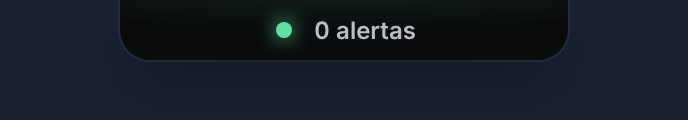
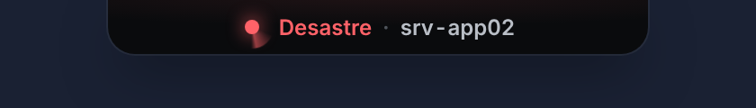
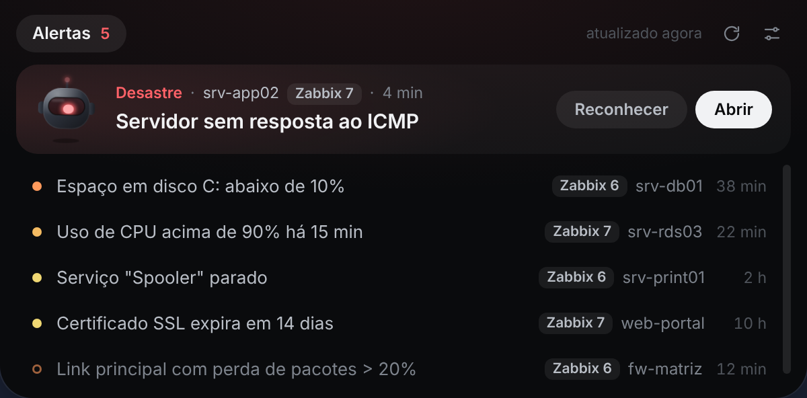

Alertas do Zabbix no topo da tela, sem abrir aba nenhuma.
Uma barra discreta no topo da tela. Você continua no que está fazendo; quando um alerta grave aparece, a luz muda de cor e a barra mostra o host com problema.
Grátis e de código aberto. Windows 10 e 11, Linux em desenvolvimento. Zabbix 5.4 a 7.x.
Fica fora do caminho até você precisar
-

Recolhida, ela some
Uma pílula pequena no topo da tela. O mouse passa por ela, e nada que você estiver fazendo é atrapalhado.
-

Alerta grave aparece sozinho
Em Alta ou Desastre, a luz fica vermelha e a pílula mostra direto o host com problema. O Windows também notifica.
-

Passou o mouse, abriu
O alerta mais grave vem em destaque, com Reconhecer e Abrir. O resto fica numa lista curta, do mais grave para o menos grave.
O que mais vem junto
- Leve no servidor
- Uma consulta a cada 60 segundos, com os hosts em cache. Menos que um dashboard do Zabbix aberto.
- Tokens protegidos
- Ficam criptografados no Windows e nunca voltam em texto puro para a tela. Sem telemetria.
- Só o que importa
- Severidade mínima configurável. Problemas em manutenção ficam de fora.
- Plugins
- Outros sistemas entram por plugins, cada um com sua aba. Ver os plugins.
Perguntas frequentes
É grátis mesmo?
Sim. O TopWatch é software livre, sob a licença AGPL-3.0: pode usar em casa e na empresa.
Funciona com a minha versão do Zabbix?
Do 5.4 em diante, incluindo 6.0, 6.4 e 7.x. Ele pergunta a versão para o servidor e escolhe sozinho o jeito de autenticar.
Que permissão o token precisa ter?
Leitura nos grupos de hosts que você quer ver. Para o botão Reconhecer funcionar, o usuário precisa de permissão de escrita nesses hosts. O ideal é um usuário dedicado.
Vai pesar no Zabbix?
Não. É uma consulta de problemas a cada 60 segundos (mínimo de 30) e uma busca de hosts só quando aparece um trigger novo.
O Windows ou o antivírus bloqueou. E agora?
O instalador ainda não é assinado digitalmente, então o SmartScreen avisa "Editor desconhecido": clique em Mais informações e Executar assim mesmo. Em computador corporativo com AppLocker ou política de TI, peça a liberação para a equipe de segurança. Não tente contornar a política.
Funciona no Linux ou no Mac?
Hoje é para Windows. A versão para Linux está em desenvolvimento. No Mac ainda não foi testado.
Instalar leva dois minutos
-
Baixe o instalador
Na página de versões do GitHub, baixe o
.exemais recente. -
Libere no SmartScreen
Clique em Mais informações e depois em Executar assim mesmo.
-
Conecte o Zabbix
No ícone da bandeja, abra Configurações, cole a URL e um token de API e use Testar conexão.